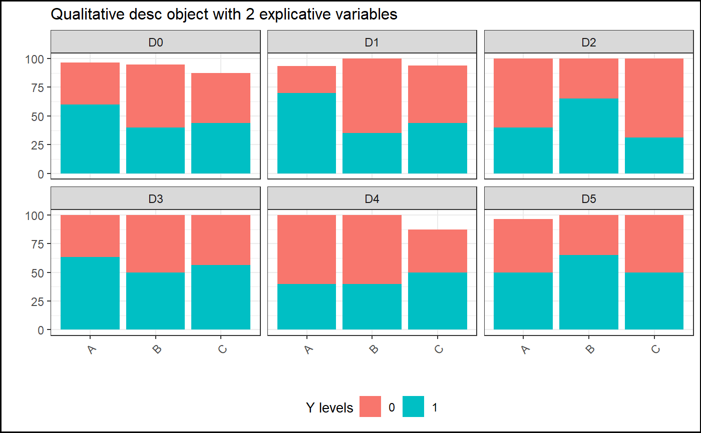

plot.desc.RdDisplay the corresponding graphic of statistical table
# S3 method for desc plot(x, ..., title = "", ylim = NULL, xlim = NULL, xlab = "", ylab = "", legend.label = "Group", add.sd = F, add.ci = F, size.title = 10, add.line = T)
| x | A desc object |
|---|---|
| ... | Other parameters |
| title | Character The title of the plot |
| ylim | Numeric of length 2 for setting y axis limits |
| xlim | Numeric of length 2 for setting x axis limits |
| xlab | Character Label for x-axis |
| ylab | Character Label for y-axis |
| legend.label | Character Label for the legend (used only if x1 and x2 are not NULL in the desc object) |
| add.sd | Logical. If TRUE it adds bars to the means representing +/-SD (for desc quanti reporting only) |
| add.ci | Logical. If TRUE it adds bars to the means representing 95% CI (for LS Means reporting only) |
| size.title | Numeric. used to specify the font size of the title |
| add.line | Logical. If TRUE it joins the dots with a line (default to TRUE) |
It's a wrapper function whiche uses gg_desc_quanti
gg_desc_quali or gg_desc_lsmeans depending if
the desc object is of type "quali", "quanti" or "lsmeans"
(argumenttype.desc in desc object, see examples below).
data(data) desc=report.quali(data=data,y="y_logistic",x1="GROUP", x2="TIMEPOINT") plot(desc, title="Qualitative desc object with 2 explicative variables", legend.label="Y levels")desc2=report.quanti(data=data,y="y_numeric",x1="GROUP", x2="TIMEPOINT") plot(desc2, title="Quantitative desc object with 2 explicative variables", legend.label="Treatment groups")#Removing baseline data in the response, for the model data.mod=droplevels(data[data$TIMEPOINT!="D0",]) library(nlme) library(emmeans) mod3=lme(y_numeric~baseline+GROUP+TIMEPOINT+GROUP*TIMEPOINT, random=~1|SUBJID,data=data.mod,na.action=na.omit) test3=emmeans(mod3,~GROUP|TIMEPOINT) tab.mod3=report.lsmeans(lsm=test3,x1="GROUP", x2="TIMEPOINT",at.row="TIMEPOINT",data=data.mod) gg=plot(tab.mod3,title="LS Means plot example") #Print gg